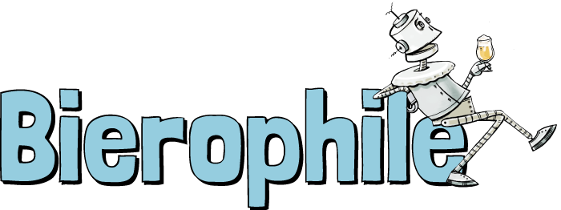

<nav class="navbar navbar-expand-lg navbar-light bg-light">
  <a class="navbar-brand" [routerLink]="['/']"></a>
  <button class="navbar-toggler" type="button" data-toggle="collapse" data-target="#navNonConnecte"
    aria-controls="navNonConnecte" aria-expanded="false" aria-label="Toggle navigation">
    <span class="navbar-toggler-icon"></span>
  </button>
  <div class="collapse navbar-collapse" id="navNonConnecte">
    <div class="navbar-nav">
      <a class="nav-item nav-link" [routerLink]="['/blondes']">Les blondes</a>
      <a class="nav-item nav-link" [routerLink]="['/brunes']">Les brunes</a>
      <a class="nav-item nav-link" [routerLink]="['/ambrees']">Les ambrées</a>
    </div>
  </div>
</nav>

<div class="body-app">
  <router-outlet></router-outlet>
</div>
